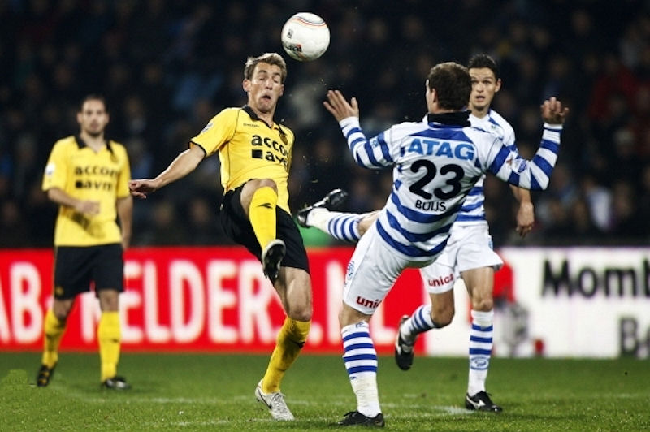

De wedstrijd kende twee gezichten. In de eerste
helft was De Graafschap duidelijk de baas in de eigen Vijverberg en
werd Roda op strijdlust afgetroefd. In de tweede helft lieten de
bezoekers wel zien waarom de ploeg zoveel lof oogst dit seizoen. Het
was pas de tweede nederlaag voor Roda deze competitie. Alleen bij
Ajax werd in augustus verloren. Roda bleef de afgelopen tien duels
ongeslagen.

In de beginfase domineerde De Graafschap. Binnen een tijdsbestek van
twee minuten was het 2-0. Poepon maakte beide treffers in de 23e en
25e minuut. Het tekende de tomeloze inzet van De Graafschap dat de
spits de bal beide keren in het doel gleed.
Roda stelde daar weinig tegenover. De ploeg van trainer Van
Veldhoven oogde defensief kwetsbaar en liet aanvallend weinig zien.
Meulens en Huysegems vervingen het gekwetste Scandinavische
aanvalsduo Skoubo en Junker. Ze lieten weinig zien, maar vlak
voor rust scoorde Huysegems toch met een hard schot in de bovenhoek:
2-1, (45').
Door de aanvallende zwakte van Roda moest Van Veldhoven wel
ingrijpen. De licht geblesseerde Junker kwam vanaf de bank om
Addo te vervangen. De bezoekers gingen beter spelen en wonnen de
persoonlijke duels wat vaker. Buiten een goede kans voor Junker werd
Roda echter zelden gevaarlijk. Bovendien maakte Poepon een kwartier
voor tijd aan alle onzekerheid een einde: 3-1, (76').
Roda mag met een zesde plaats nog wel naar boven kijken. De ploeg
heeft nog een wedstrijd tegoed in de eredivisie. Roda haalt woensdag
de afgelaste wedstrijd tegen FC Utrecht in. De Graafschap speelt
woensdag het restant van het gestaakte duel tegen Willem II.